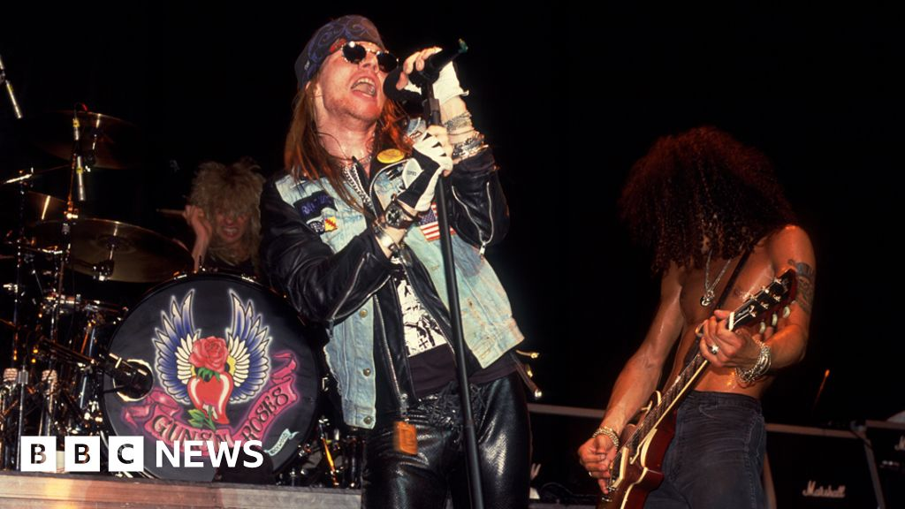
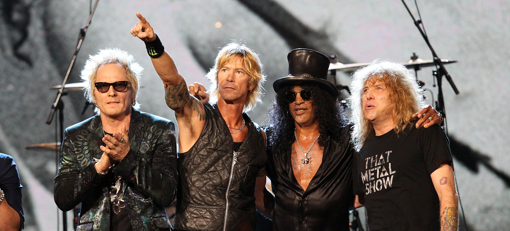
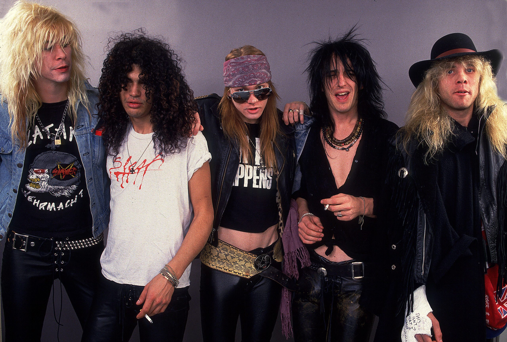

枪与玫瑰（英语：Guns N'
Roses，简称：GNR）是一支美国的硬式摇滚乐队，成立于1985年的洛杉矶好莱坞，在八零年代末及九零年代初期享有盛名，1994年之后乐队成员除了主唱埃克索尔·罗斯之外均经频繁更换，到2008年才发行新专辑。枪与玫瑰有“世界摇滚巨星”的地位和“世界上最危险的乐队”称号。
1989 "Sweet Child O' Mine" Favorite Pop/Rock Single 获奖
枪与玫瑰 Favorite Heavy Metal/Hard Rock Artist 提名
Appetite for Destruction Favorite Heavy Metal/Hard Rock Album 提名
1990 枪与玫瑰 Favorite Heavy Metal/Hard Rock Artist 获奖
Appetite for Destruction Favorite Heavy Metal/Hard Rock Album 获奖
1992 Guns N' Roses Favorite Heavy Metal/Hard Rock Artist 获奖
Favorite Pop/Rock Band/Duo/Group 提名
Use Your Illusion I Favorite Heavy Metal/Hard Rock Album 提名
主要作品
It's So Easy (1987)
Welcome to the Jungle (1987)
Sweet Child o' Mine (1988)
Paradise City (1988)
Nightrain (1989)
Patience (1989)
You Could Be Mine (1991)
Don't Cry (1991)
Live and Let Die (1991)
November Rain (1992)
Knockin' on Heaven's Door (1992)
Yesterdays (1992)
Civil War (1993)
Ain't It Fun (1993)
Estranged (1994)
Since I Don't Have You (1994)
Sympathy for the Devil (1994)
Chinese Democracy (2008)
Better (2008)
Street of Dreams (2009)
成员照片



主唱生平
埃克索尔·罗斯（英语：Axl Rose，1962年2月6日－）原名威廉·布鲁斯·罗斯（William Bruce Rose, Jr.）；少年时称威廉·布鲁斯·贝利（William Bruce Bailey），美国摇滚乐创作歌手和音乐家，是硬式摇滚乐团枪与玫瑰的原始成员及主唱。